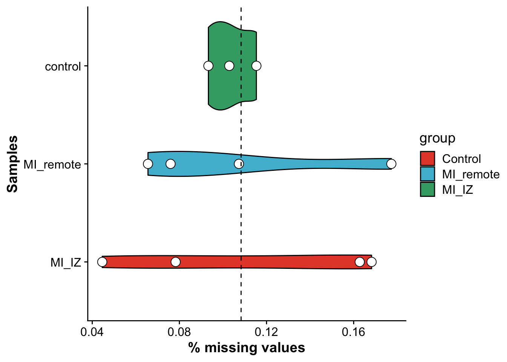
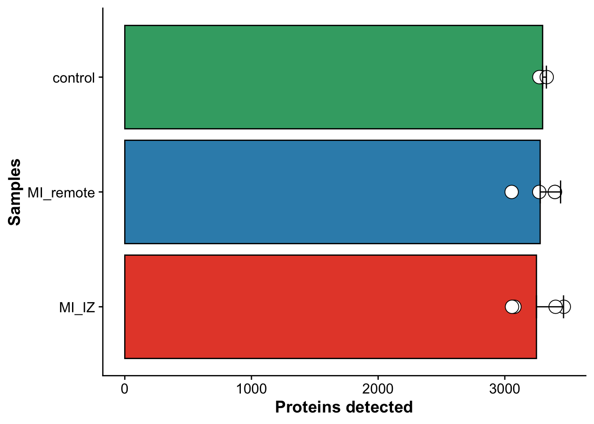

Last updated: 2023-08-24
Checks: 6 1
Knit directory: mi_spatialomics/
This reproducible R Markdown analysis was created with workflowr (version 1.7.0). The Checks tab describes the reproducibility checks that were applied when the results were created. The Past versions tab lists the development history.
The R Markdown file has unstaged changes. To know which version of
the R Markdown file created these results, you’ll want to first commit
it to the Git repo. If you’re still working on the analysis, you can
ignore this warning. When you’re finished, you can run
wflow_publish to commit the R Markdown file and build the
HTML.
Great job! The global environment was empty. Objects defined in the global environment can affect the analysis in your R Markdown file in unknown ways. For reproduciblity it’s best to always run the code in an empty environment.
The command set.seed(20230612) was run prior to running
the code in the R Markdown file. Setting a seed ensures that any results
that rely on randomness, e.g. subsampling or permutations, are
reproducible.
Great job! Recording the operating system, R version, and package versions is critical for reproducibility.
Nice! There were no cached chunks for this analysis, so you can be confident that you successfully produced the results during this run.
Great job! Using relative paths to the files within your workflowr project makes it easier to run your code on other machines.
Great! You are using Git for version control. Tracking code development and connecting the code version to the results is critical for reproducibility.
The results in this page were generated with repository version e8204f0. See the Past versions tab to see a history of the changes made to the R Markdown and HTML files.
Note that you need to be careful to ensure that all relevant files for
the analysis have been committed to Git prior to generating the results
(you can use wflow_publish or
wflow_git_commit). workflowr only checks the R Markdown
file, but you know if there are other scripts or data files that it
depends on. Below is the status of the Git repository when the results
were generated:
Ignored files:
Ignored: .DS_Store
Ignored: .Rhistory
Ignored: .Rproj.user/
Ignored: analysis/.DS_Store
Ignored: analysis/deprecated/.DS_Store
Ignored: data/.DS_Store
Ignored: data/140623.calcagno_et_al.seurat_object.rds
Ignored: data/molkart_tissue_regions_rois/.DS_Store
Ignored: figures/.DS_Store
Ignored: omnipathr-log/
Ignored: output/.DS_Store
Ignored: output/figure3.pixie_cell_cluster_heatmap.png
Ignored: output/figure3.pixie_pixel_cluster_heatmap.png
Ignored: output/figure3.pixie_pixel_cluster_heatmap.tiff
Ignored: output/harmony.molkart.h5Seurat
Ignored: output/lunaphore_images/
Ignored: output/mol_cart/
Ignored: output/molkart_cell_types/
Ignored: output/proteomics/
Ignored: output/seqIF/
Ignored: plots/.DS_Store
Ignored: plots/Figure1.umap_plot.pdf
Ignored: references/.DS_Store
Ignored: renv/.DS_Store
Ignored: renv/library/
Ignored: renv/staging/
Untracked files:
Untracked: analysis/__pycache__/
Untracked: analysis/deprecated/molkart.quantify_cells_in_regions.ipynb
Untracked: analysis/deprecated/napari_points.ipynb
Untracked: analysis/deprecated/roi.csv
Untracked: analysis/deprecated/roi2.csv
Untracked: analysis/deprecated/test_construct_spatialdata.ipynb
Untracked: analysis/figures.deep_visual_proteomics.Rmd
Untracked: analysis/mol_cart.QC_spots.Rmd
Untracked: analysis/mol_cart.molkart.Figure1.Rmd
Untracked: analysis/mol_cart.molkart.process_quantifications_seurat.Rmd
Untracked: analysis/molecular_cartography_python/
Untracked: analysis/seqIF.heatmaps_pixie.figure3.Rmd
Untracked: analysis/seqIF_python/
Untracked: analysis/spatialMI_functions.py
Untracked: data/Calcagno2022_int_logNorm_annot.h5Seurat
Untracked: data/pixie.cell_table_size_normalized_cell_labels.csv
Untracked: plots/Figure3.cell_types_overtimes.pdf
Untracked: plots/Figure3.pixel_clusters_overtimes.pdf
Untracked: references/mol_cart.heart_regions/
Unstaged changes:
Modified: .gitignore
Modified: analysis/data_analysis.Rmd
Modified: analysis/data_processing.Rmd
Modified: analysis/figures.Rmd
Deleted: analysis/figures.figure_5.Rmd
Modified: analysis/figures.supplementary_figure_X.proteomics_qc.Rmd
Deleted: analysis/molkart.Figure1.Rmd
Deleted: analysis/molkart.QC_spots.Rmd
Deleted: analysis/molkart.process_quantifications_seurat.Rmd
Modified: analysis/proteomics.bulk_de_analysis.Rmd
Modified: analysis/proteomics.filter_proteomic_data.Rmd
Modified: analysis/proteomics.pathway_enrichment_analysis.Rmd
Modified: analysis/proteomics.scRNAseq_comparison.Rmd
Deleted: analysis/python/lunaphore.figure_3.create_pixie_images.ipynb
Deleted: analysis/python/lunaphore.figure_3.pixie_heatmaps.ipynb
Deleted: analysis/python/molkart.count_spots_on_tissue.ipynb
Deleted: analysis/python/molkart.plot_MC_spots.ipynb
Deleted: analysis/python/molkart.plot_spots_figure1.ipynb
Deleted: analysis/python/molkart.quantify_cells_in_regions.ipynb
Deleted: analysis/python/napari_points.ipynb
Deleted: analysis/python/roi.csv
Deleted: analysis/python/roi2.csv
Deleted: analysis/python/spatialMI_functions.py
Deleted: analysis/python/test_construct_spatialdata.ipynb
Deleted: data/molkart.spots_per_tissue.tsv
Modified: figures/Figure_5.eps
Modified: figures/Figure_5.pdf
Modified: figures/Figure_5.png
Modified: figures/Figure_5.svg
Modified: output/molcart.misty_celltype_table.tsv
Deleted: output/molkart_segmentation_images/sample_control_r1_s1.DAPI_WGA.crop.png
Deleted: output/molkart_segmentation_images/sample_control_r1_s1.DAPI_WGA.crop.scale.png
Deleted: output/molkart_segmentation_images/sample_control_r1_s1.DAPI_WGA.roi.tif
Deleted: output/molkart_segmentation_images/sample_control_r1_s1.DAPI_WGA.tif
Deleted: output/molkart_segmentation_images/sample_control_r1_s1.DAPI_WGA_roi.crop.png
Deleted: output/molkart_segmentation_images/sample_control_r1_s1.DAPI_WGA_roi.crop.scale.png
Deleted: output/molkart_segmentation_images/sample_control_r1_s1.cellpose_full_image.outline.tif
Deleted: output/molkart_segmentation_images/sample_control_r1_s1.cellpose_full_image.roi.outline.tif
Deleted: output/molkart_segmentation_images/sample_control_r1_s1.cellpose_full_image.roi.tif
Deleted: output/molkart_segmentation_images/sample_control_r1_s1.cellpose_full_image.tif
Deleted: output/molkart_segmentation_images/sample_control_r1_s1.cellpose_mask.crop.png
Deleted: output/molkart_segmentation_images/sample_control_r1_s1.cellpose_mask.crop.scale.png
Deleted: output/molkart_segmentation_images/sample_control_r1_s1.cellpose_mask_roi.crop.png
Deleted: output/molkart_segmentation_images/sample_control_r1_s1.cellpose_mask_roi.crop.scale.png
Deleted: output/proteomics.filt_imputed_proteins.tsv
Deleted: output/proteomics.filtered_proteins.tsv
Deleted: output/proteomics.pca_res.rds
Deleted: output/proteomics.protein_missing_stats.tsv
Deleted: output/proteomics.vsn_norm_proteins.tsv
Modified: plots/Figure1.dotplot.pdf
Note that any generated files, e.g. HTML, png, CSS, etc., are not included in this status report because it is ok for generated content to have uncommitted changes.
These are the previous versions of the repository in which changes were
made to the R Markdown
(analysis/proteomics.filter_proteomic_data.Rmd) and HTML
(docs/proteomics.filter_proteomic_data.html) files. If
you’ve configured a remote Git repository (see
?wflow_git_remote), click on the hyperlinks in the table
below to view the files as they were in that past version.
| File | Version | Author | Date | Message |
|---|---|---|---|---|
| html | 67e546d | FloWuenne | 2023-07-23 | Build site. |
| Rmd | d6085a2 | FloWuenne | 2023-07-23 | Upadte since error for building. |
| Rmd | ed31d81 | FloWuenne | 2023-07-02 | Finalized proteomics analysis. |
| html | ed31d81 | FloWuenne | 2023-07-02 | Finalized proteomics analysis. |
| html | f412578 | FloWuenne | 2023-06-14 | Build site. |
| Rmd | 2d015dd | FloWuenne | 2023-06-14 | Finalized imputation with RF. |
| html | 2d015dd | FloWuenne | 2023-06-14 | Finalized imputation with RF. |
Here we will process and analyze the data generated via laser-microdissection coupled with high-sensitiviy proteomics of the endocardial layer from control hearts and hearts one day after myocardial infarction. We have a total of 3 groups in this dataset, all representing laser microdissected regions of endocardium from mouse hearts: 1) control = Mouse hearts without infarct 2) MI_IZ = Mouse hearts 1 day post MI. Endocardial region adjacent to the infarct. 3) MI_remote = Mouse hearts 1 day post MI. Endocardial region remote to the infarct.
First, let’s load the raw data and the associated metadata for all samples.
prot_res <- fread("./data/proteomics_endocardial_layer.tsv")
metadata <- fread("./data/metadata.proteomics_endocardial_layer.txt")As a first QC, we will calculate the amount of missing data (NA values) per sample in the proteomics data.
missing <- colSums(is.na(prot_res))[6:ncol(prot_res)]
non_missing <-colSums(!is.na(prot_res))[6:ncol(prot_res)]
missingness <- missing / (non_missing + missing)
missingness <- as.data.frame(missingness)
missingness$missing_prot <- missing
missingness$sample <- rownames(missingness)
## Add group to counts
missingness <- missingness %>%
mutate("group" = if_else(grepl("control",sample),"control",
if_else(grepl("MI_IZ",sample),"MI_IZ","MI_remote")))
## Set order of groups
missingness$group <- factor(missingness$group,
levels = rev(c("control","MI_remote","MI_IZ")))
avg_missingness <- mean(missingness$missingness)
ggplot(missingness,aes(group,missingness,fill = group)) +
geom_violin(color = "black") +
geom_point(fill = "white",pch = 21, color= "black",size = 4) +
coord_flip() +
scale_fill_manual(values = proteome_palette,
labels = c("Control","MI_remote","MI_IZ")) +
labs(x = "Samples",
y = "% missing values") +
geom_hline(yintercept = avg_missingness, linetype = 2)
Then we are going to calculate the missingness per sample group (the treatment group and area that was excised by laser microdissection) and exclude proteins that are only identified in a subset of samples per group. For controls, we expect a protein to be measured in at least 2/3 samples (33% missingness allowed). For MI samples, we expect a protein to be measured in at least 2/4 samples (50% missingness allowed)
na_mi <- prot_res %>%
pivot_longer(control_r1:MI_remote_r4,
names_to = "sample",
values_to = "protein_exp") %>%
mutate("group" = if_else(grepl("control",sample),"control",
if_else(grepl("MI_IZ",sample),"MI_IZ","MI_remote"))) %>%
group_by(Protein_Ids,Genes,group) %>%
summarise(na_count = sum(is.na(protein_exp))) %>%
ungroup() %>%
mutate("percent_na" = if_else(group == "control",na_count / 3, na_count / 4)) %>%
select(-na_count) %>% ## control: n = 3 and MI: n = 4
pivot_wider(names_from = "group",values_from = percent_na) %>%
mutate("retain" = if_else(control <= 0.3 | MI_remote <= 0.25 | MI_IZ <= 0.25, "yes","no"))`summarise()` has grouped output by 'Protein_Ids', 'Genes'. You can override
using the `.groups` argument.prot_res_filt <- subset(prot_res,Protein_Ids %in% subset(na_mi,retain == "yes")$Protein_Ids)After filtering based on missingness, we will filter out any proteions that are considered contaminants based on know contaminations based on Frankenfeld 2022
## Count number of detected proteins with contaminants
prot_res_quant_cont <- prot_res_filt %>%
select(control_r1:MI_remote_r4) %>%
summarise_all(funs(sum(!is.na(.))))Warning: `funs()` was deprecated in dplyr 0.8.0.
ℹ Please use a list of either functions or lambdas:
# Simple named list: list(mean = mean, median = median)
# Auto named with `tibble::lst()`: tibble::lst(mean, median)
# Using lambdas list(~ mean(., trim = .2), ~ median(., na.rm = TRUE))
Call `lifecycle::last_lifecycle_warnings()` to see where this warning was
generated.## Count number of detected proteins without contaminants
prot_res_filt <- prot_res_filt %>%
mutate("contaminant" = if_else(grepl("Cont",Protein_Ids),"yes","no"))
prot_res_quant <- prot_res_filt %>%
subset(contaminant == "no") %>%
select(control_r1:MI_remote_r4) %>%
summarise_all(funs(sum(!is.na(.))))Warning: `funs()` was deprecated in dplyr 0.8.0.
ℹ Please use a list of either functions or lambdas:
# Simple named list: list(mean = mean, median = median)
# Auto named with `tibble::lst()`: tibble::lst(mean, median)
# Using lambdas list(~ mean(., trim = .2), ~ median(., na.rm = TRUE))
Call `lifecycle::last_lifecycle_warnings()` to see where this warning was
generated.Here, we will plot the number of proteins identified per group.
final_counts <- t(rbind(prot_res_quant_cont,
prot_res_quant))
colnames(final_counts) <- c("w_cont","wo_cont")
final_counts <- as.data.frame(final_counts) %>%
mutate("sample" = rownames(final_counts))
## Add protein counts to metadata
metadata_counts <- left_join(metadata,final_counts, by = "sample")
## Add group to counts
metadata_counts <- metadata_counts %>%
mutate("group" = if_else(grepl("control",sample),"control",
if_else(grepl("MI_IZ",sample),"MI_IZ","MI_remote")))
## Add missingness to table
metadata_counts <- left_join(metadata_counts,missingness, by = c("sample","group"))
## Set order of groups
metadata_counts$group <- factor(metadata_counts$group,
levels = rev(c("control","MI_remote","MI_IZ")))
## Summarize observations across group
metadata_counts_stat <- data_summary(metadata_counts,
varname = "wo_cont", groupnames = c("group"))Loading required package: plyr------------------------------------------------------------------------------You have loaded plyr after dplyr - this is likely to cause problems.
If you need functions from both plyr and dplyr, please load plyr first, then dplyr:
library(plyr); library(dplyr)------------------------------------------------------------------------------
Attaching package: 'plyr'The following object is masked from 'package:here':
hereThe following object is masked from 'package:ggpubr':
mutateThe following objects are masked from 'package:dplyr':
arrange, count, desc, failwith, id, mutate, rename, summarise,
summarizeThe following object is masked from 'package:purrr':
compact## Barplot to show the number of proteins detected per group (excluding contaminants)
ggplot(metadata_counts_stat,aes(group,wo_cont)) +
geom_bar(aes(fill = group),stat="identity", color="black",
position=position_dodge()) +
geom_point(data = metadata_counts, aes(group,wo_cont),
fill = "white",pch = 21, color= "black",size = 5) +
geom_errorbar(aes(ymin=wo_cont, ymax=wo_cont+sd), width=.2,
position=position_dodge(.9)) +
coord_flip() +
scale_fill_manual(values = proteome_palette,
labels = c("Control","MI_remote","MI_IZ")) +
labs(x = "Samples",
y = "Proteins detected") +
theme(legend.position = "none")
write.table(metadata_counts,
file = "./output/proteomics/proteomics.protein_missing_stats.tsv",
sep = "\t",
col.names = TRUE,
row.names = FALSE,
quote =FALSE)Finally, we will create a final filtered protein table, that we will use for imputation.
prot_res_final <- subset(prot_res_filt,contaminant == "no") %>%
select(-c(contaminant,First_Protein_Description))
write.table(prot_res_final,
file = "./output/proteomics/proteomics.filtered_proteins.tsv",
sep = "\t",
col.names = TRUE,
row.names = FALSE,
quote = FALSE)
sessionInfo()R version 4.2.3 (2023-03-15)
Platform: aarch64-apple-darwin20 (64-bit)
Running under: macOS Ventura 13.5
Matrix products: default
BLAS: /Library/Frameworks/R.framework/Versions/4.2-arm64/Resources/lib/libRblas.0.dylib
LAPACK: /Library/Frameworks/R.framework/Versions/4.2-arm64/Resources/lib/libRlapack.dylib
locale:
[1] en_US.UTF-8/en_US.UTF-8/en_US.UTF-8/C/en_US.UTF-8/en_US.UTF-8
attached base packages:
[1] stats graphics grDevices datasets utils methods base
other attached packages:
[1] plyr_1.8.8 RColorBrewer_1.1-3 ggsci_3.0.0 here_1.0.1
[5] cowplot_1.1.1 ggpubr_0.6.0 data.table_1.14.8 lubridate_1.9.2
[9] forcats_1.0.0 stringr_1.5.0 dplyr_1.1.2 purrr_1.0.1
[13] readr_2.1.4 tidyr_1.3.0 tibble_3.2.1 ggplot2_3.4.2
[17] tidyverse_2.0.0 workflowr_1.7.0
loaded via a namespace (and not attached):
[1] Rcpp_1.0.11 getPass_0.2-2 ps_1.7.5
[4] rprojroot_2.0.3 digest_0.6.33 utf8_1.2.3
[7] R6_2.5.1 backports_1.4.1 evaluate_0.21
[10] highr_0.10 httr_1.4.6 pillar_1.9.0
[13] rlang_1.1.1 rstudioapi_0.15.0 whisker_0.4.1
[16] car_3.1-2 callr_3.7.3 jquerylib_0.1.4
[19] rmarkdown_2.23 labeling_0.4.2 munsell_0.5.0
[22] broom_1.0.5 compiler_4.2.3 httpuv_1.6.11
[25] xfun_0.39 pkgconfig_2.0.3 htmltools_0.5.5
[28] tidyselect_1.2.0 fansi_1.0.4 crayon_1.5.2
[31] tzdb_0.4.0 withr_2.5.0 later_1.3.1
[34] grid_4.2.3 jsonlite_1.8.7 gtable_0.3.3
[37] lifecycle_1.0.3 git2r_0.32.0 magrittr_2.0.3
[40] scales_1.2.1 cli_3.6.1 stringi_1.7.12
[43] cachem_1.0.8 carData_3.0-5 farver_2.1.1
[46] renv_1.0.0 ggsignif_0.6.4 fs_1.6.3
[49] promises_1.2.0.1 bslib_0.5.0 generics_0.1.3
[52] vctrs_0.6.3 tools_4.2.3 glue_1.6.2
[55] hms_1.1.3 processx_3.8.2 abind_1.4-5
[58] fastmap_1.1.1 yaml_2.3.7 timechange_0.2.0
[61] colorspace_2.1-0 BiocManager_1.30.21.1 rstatix_0.7.2
[64] knitr_1.43 sass_0.4.7